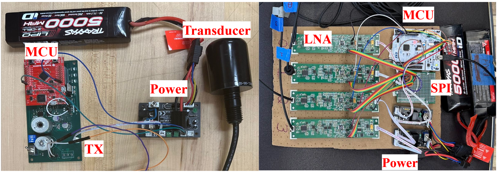
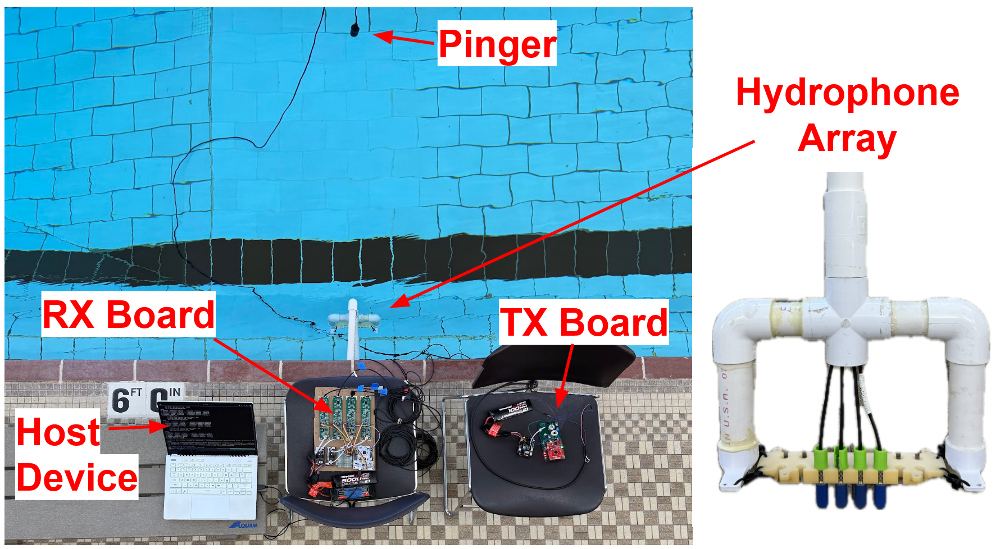
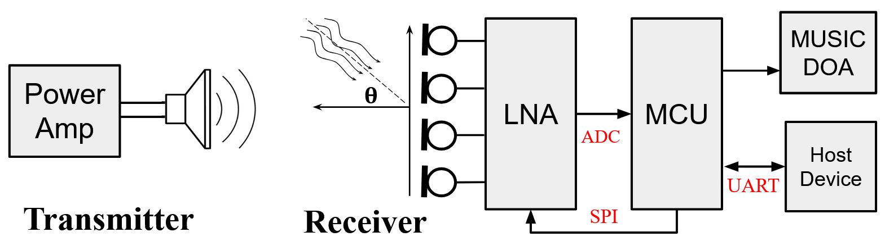
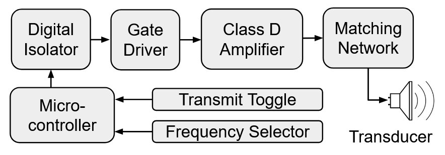
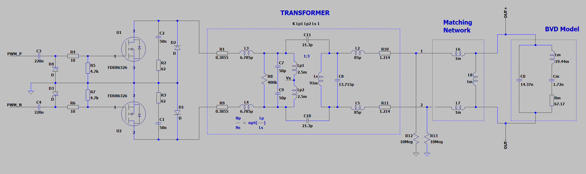
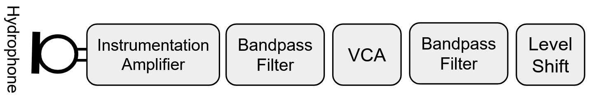
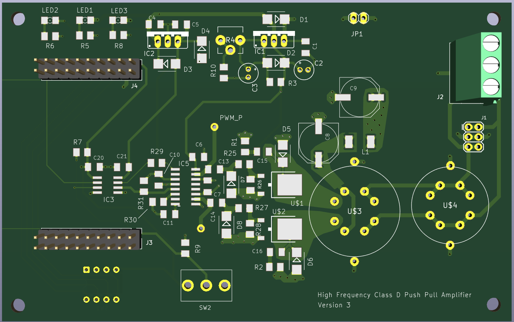
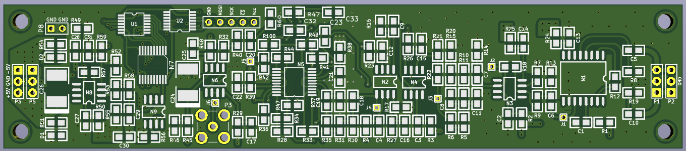

Role: Hardware Design Lead
Project Context: Senior Capstone Initiative for Lehigh Underwater Robotics (LUR)
Timeline: August 2025 - April 2026
Technical Advisor: Dr. Y. Rosa Zheng

Autonomous Underwater Vehicles (AUVs) cannot rely on GPS or high-frequency radio waves due to extreme attenuation in water, and optical imaging degrades rapidly in low visibility environments. To navigate autonomously toward competition objectives in events like the RoboSub competition, vehicles must locate underwater acoustic pingers that generate periodic ultrasonic pulses.
We implemented an analog front-end receiver array and digital algorithm to receive and calculate the true Direction of Arrival (DOA) for incoming signals to within 15°, along with an efficient power transmitter capable of emulating custom pulse frequencies.
| Parameter | Transmitter Subsystem (TX) | Receiver Subsystem (RX) |
|---|---|---|
| Frequency Range | 25 kHz to 40 kHz (Selectable via DIP Switch) | 25 kHz to 40 kHz |
| Output / Dynamic Range | ~400 Vpp driven into piezoelectric load | Up to +60dB of controllable gain. Drives 0-3V AC input |
| System Latency / Speed | N/A | 4.5 ms calculation window |
| Achieved Accuracy | Validated transmission range >100 feet in-pool | 15° angular resolution in reflective environments |

A piezoelectric transducer was used to generate the transmitted acoustic signal, requiring both high voltage and a matching network to drive its highly capacitive load at frequencies beside its resonant frequency.
Class D Amplifier
The transmitter will be battery powered and reside inside a water-proof enclosure, meaning Class A/AB amplifiers must be ruled out due to excessive heat sinks that would be required. Class D amplifiers are light-weight, power-efficient, and have a small-footprint making them excellent for our situation.
To achieve high voltage and prevent high-current from flowing into our transducer and damaging it, a center-tapped transformer was used to implement a push-pull half-bridge topology. The transformer provides both step-up voltage as well as doubling the voltage swing due to its center tap while still maintaining a half-bridge configuration. A pi-filter was used to connect the primary-side center tap to the board's power supply to prevent high-frequency switching distortion from propagating back into the rest of the circuit.
Additionally, the push-pull configuration allowed us to configure the transducer as a bridge-tied-load improving the system's symmetry and reducing total harmonic distortion.
Lastly, an onboard microcontroller was used to easily generate PWM square waves used as the input.
Digital Isolation and Gate Driver (Si8241):
The Si842x IC by Skyworks provides isolation between both input and output as well as both output channels. It also has programmable dead-time generation using only one external resistor for the two inverted outputs that drive each of the MOSFETs in the Class D Amp.
An LCR meter was used to measure parasitic inductance, capacitance, and resistance of the transformer and transducer in order to generate parasitic models.
In-lab testing was difficult as custom inductors had to be made since off-the-shelf parts immediately saturated or overheated due to the voltage and current being driven. To compensate, SPICE simulations were done using the parasitic models of the transformer and transducer, along with the manufacturer's model for the MOSFETs to test several matching networks to minimize switching and common-mode distortion, and provide the best performance over the entire bandwidth of the output frequencies.

A dip switch connects to the microcontroller and allows the user to select the desired frequency, while a toggle switch is used to control whether to board transmits or not in order to save battery life and prevent overheating during testing.

Instrumentation Amplifier (INA217):
Output of each hydrophone receiver is a differential twisted pair to reduce EMI interference between receiver array and the LNA boards.
The instrumentation amplifier subtracts the two inputs to cancel out common noise and provides +26dB of gain to immediately boost the SNR.
2nd Order Bandpass Filter (ADA4841-1):
The MUSIC algorithm uses phased-based direction finding which means that inter-channel phase delay should be as close to identical as possible.
Two steps were taken to ensure this: a Bessel response filter was used to minimize non-linear group delay effects and a Sallen-Key topology was used to minimize the number of external components needed thereby reducing component tolerance errors between channels.
VCA (VCA810):
Other options for voltage control I looked at included an op-amp with a digital potentiometer, but this would create a stepped response introducing harsh noise into the low noise system, and a digitally-controlled Programmable Gain Amplifier, but its changing discrete gain states would shift its closed-loop pole locations and therefore change the phase response whenever gain adjusts.
Instead I chose to use a continuous-time voltage-controlled gain adjustment.
The VCA810 was chosen because it can maintain a stable frequency response across its entire 80 dB gain range, preserving channel-to-channel phase response.
By taking an analog voltage as its control input, we can vary the gain using our existing microcontroller via an SPI signal that is converted by an external DAC.
8th Order Bandpass Filter (LTC1562-2):
8th-order Cascaded Sallen-Key or Multiple Feedback filters require dozens of high-precision discrete components, and even a minor 1% component tolerance mismatch across four receiver channels can generate uncorrectable channel-to-channel phase errors.
The LTC1562 is a true continuous-time active RC filter network and does not utilize a clock, which allows it to have an ultra-low noise floor and zero high-frequency clock feedthrough or aliasing artifacts.
It also has a laser-trimmed center frequency to within 0.5% to ensure inter-channel accuracy.
The 8th-order bandpass filter was designed to be an elliptic Bessel filter to maximize the attenuation of low frequency signals and second and third order harmonics of the transmitted signals.
The ADC on the STM32 F446RE has a sampling rate of 2.4 MSPS and can multiplex the ADC between four channels, allowing for 400 ksps on each channel. This provided a factor of 5-times oversampling which would be good enough for our situation, and does not cost anymore than what we would already have to pay for our microcontroller.
The STM32's ADC operates on 0-3V so a level shifter was added using the OP284 which has ultra low noise, a low offset voltage, and moderate slew rate and bandwidth. The OP284's second amplifier is used as a unity-gain buffer that connects to the STM32's ADC input.
Our transducer has a strong resonance at 28 kHz, however, we needed to drive signals at frequencies of 25, 30, 35, and 40 kHz. Getting good quality signals over the desired bandwidth was a challenge for the matching network, and ultimately the final design is a compromise that provides moderately low distortion waveforms at all frequencies instead of very low distortion at just 30 kHz.
Additionally, the hydrophone receivers we had were handmade and were highly directional and picked up massive noise transients. This made testing and verification very difficult as much of the ambient noise picked up in the pool seemed to fall within our bandpass filter's frequency range and therefore could not be filtered away. We had to borrow commercial pingers from another lab which had excellent noise rejection to verify that our system indeed worked.
The initial designs for the transmitter and LNA boards were inherited from previous students who had spent a summer a couple of years ago doing research for my group's advisor. The designs had almost no documentation and there were several routing and wiring issues on the boards that made documenting the designs very challenging.
Copious amounts of time were spent in the lab testing the PCBs and iterating through different designs of each circuit. Much time was also spent reading through data sheets and application notes to improve design and layout on the PCBs.
The power amplifier was drawing over 2A of current when the signal pulsed on and off leading to output inductors saturating and overheating. An RC Snubber circuit was designed by measuring a shift in the resonant frequency of the ringing to calculate component values, preventing excessive distortion and overheating.
The 2nd-order bandpass filter is configured as a non-inverting amplifier, however, the original design had no copper pullback near the extremely high impedance input node. Also, the filter had been designed for a very high Q-factor, all of which lead to large amounts of parasitic capacitance shunting the signal immediately to ground. Since no signal would appear on the PCB after the instrumentation amplifier stage this made troubleshooting very difficult and time consuming. Similar issues occurred with the 8th order bandpass filter.
SPI-to-DAC Race Condition
For each channel I needed to measure on the 'scope the phase delay added by the receivers themselves as well as each stage of the LNA. By doing this I could then hardcode in the software algorithm a calibration for each board to account for the delays. Luckily there was almost no relative difference between the boards due to all the precautions taken to mitigate non-linear phase distortion.
Multipath Echoes
In order for the MUSIC direction-of-arrival algorithm to produce correct mathematical results, it is imperative that the incoming signal does not contain any correlated elements. In the case of underwater acoustic signals within our pool testing environment, these correlated elements manifest themselves as massive multipath echoes caused by the acoustic signals reflecting off the pool walls. Because the algorithm immediately breaks down when these correlated reflection signals overlap the true source signal, capturing data at the exact right moment before the echoes arrive was absolutely critical.
To solve this, I designed a dedicated hardware Edge Detector project to rapidly trigger the ADC capture within 100 µs of the signal's arrival. Furthermore, as a firmware-based mitigation strategy, we utilized an energy-detection algorithm to parse the ADC buffer for the signal's rising edge. Since multipath reflections severely corrupted the data window, our ultimate solution to verify system logic was to take 30 rapid, small spatial samples instead of 1 long continuous sample. This allowed us to evaluate the data locally on a computer to confirm the system's directional accuracy despite the extreme reflections.
Moved from 2- to 4-layer board to improve signal integrity by ensuring proper low impedance paths for all signals.
High-current switching paths around the MOSFET drains and transformer primaries were made using wide polygon pours to reduce voltage ringing and EMI generated from parasitic loop inductance.
The Gate Driver output, MOSFET drains, transformer primaries, and RC Snubbers were placed as physically close as possible and low-ESR capacitors were used.
FR-4 Fiberglass was used for the top layer on any high voltage areas to prevent potential arc and damage to people or components.

Used copper pullback zones on the inputs of the high impedance non-inverting amplifiers used for filtering to minimize parasitic board capacitance. The pullback zone also incorporated internal ground and power planes directly beneath these traces.

Better Power Supplies: Isolated power supplies (multiple batteries) and physically isolated ground planes are needed on the power amp board to protect the analog signals. Less switching noise requires a better pi filter and LDOs meant specifically for a 300 kHz switching frequency. We also need to make dedicated boards for power with proper, locking physical connectors.
Fix DAC Layout: Ensure signal integrity and resolve communication bugs related to trace routing to the DAC.
Mechanical Integration: The receiver system must be integrated into the existing electronics infrastructure, and the hydrophone array needs to be mechanically redesigned to securely mount to the front of the drone's frame. Additionally, the electronics for the pinger need to be enclosed in a customized, watertight vessel for untethered underwater deployment.
Software & Autonomy: Moving forward, incorporating more modern C++ features and an object-oriented hardware-abstraction layer could result in a more readable, maintainable codebase. Finally, the system needs to be tested with two pingers transmitting simultaneously to validate the MUSIC algorithm's multi-source tracking, and the resulting DOA estimates must be integrated directly into the AUV's main autonomy stack.